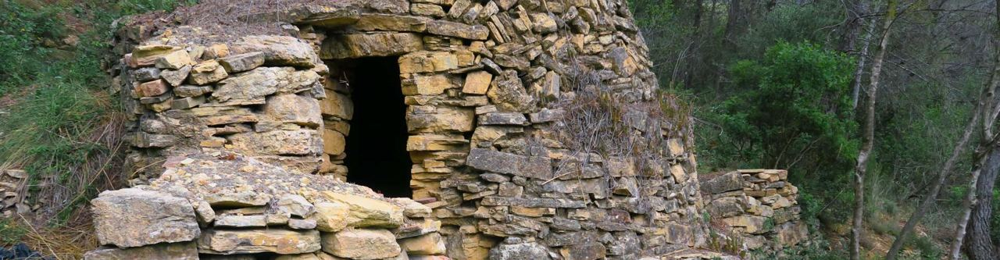

Ruta · Vallirana
Us proposem conèixer el passat agrícola del municipi de Vallirana en un curt itinerari pels voltants de poble. Descobrirem el món de la pedra seca i els seus usos per fer possible el conreu de la…